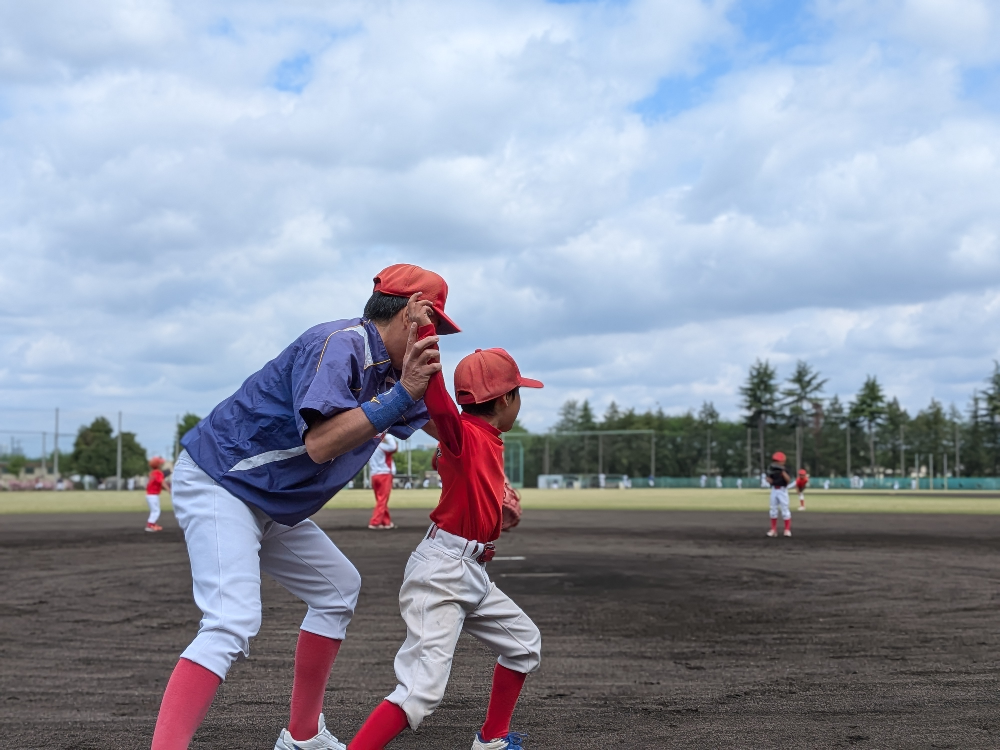

イベント
新入部員歓迎会！2名の仲間が加わりました 🎉

5月10日（土）の練習後、新入部員歓迎会を行いました。 今月から新たに2名の仲間が井口ヤングに加わりました！ どちらも野球未経験でしたが、最初から元気いっぱいにグラウンドを走り回っていました。
🎊 新入部員紹介
- ⚾ 〇〇くん（2年生） ― にしみたか学園から参加。「ホームランを打ちたい！」が目標。
- ⚾ 〇〇さん（3年生） ― 三鷹市内から参加。お兄ちゃんの影響で野球を始めました。
あっという間に打ち解けた！
最初は緊張した様子の2人でしたが、先輩部員たちがすぐに声をかけてキャッチボールに誘ってくれました。 練習が終わる頃にはすっかり打ち解けて、みんなで笑い合う姿が印象的でした。 これが「仲間を大切に」というチームの理念そのものだなと感じた1日でした。
歓迎会でみんなでお祝い🎉
練習後は保護者の皆さんも集まってくださり、簡単な歓迎会を開催。 新入部員の紹介の後、チームで集合写真を撮影しました。 新しい仲間が増えるたびに、チームの活気がさらにアップしています！

⚾ 体験入部 随時受付中！
井口ヤングでは随時、体験入部を受け付けています。野球未経験でも大丈夫。
男女問わず、小学1年生から6年生まで歓迎します。
事前申込不要。直接グラウンドに来てください！